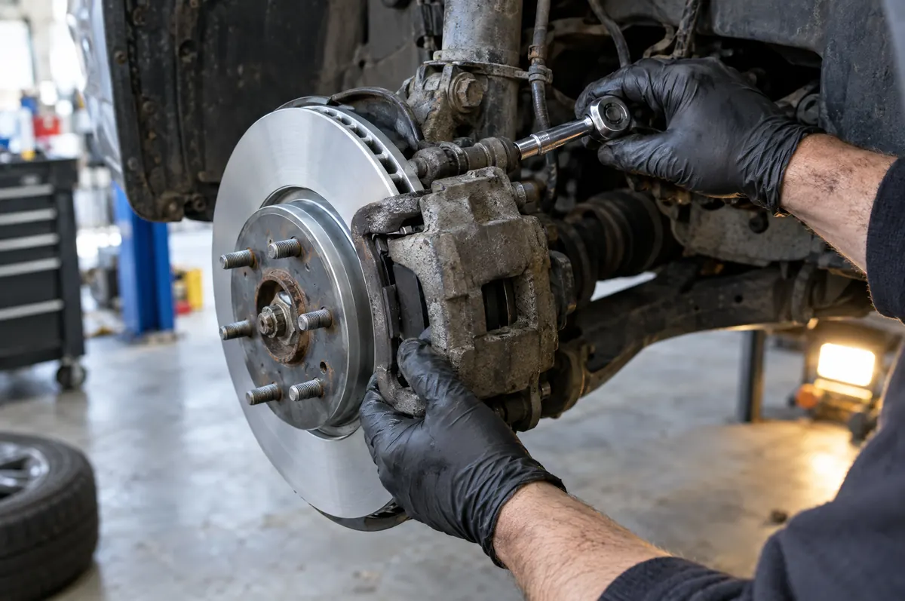

Services
Servicing, repairs and maintenance for cars, 4WDs, caravans and trailers. If it's not listed here, call and ask.

Servicing and repairs
-
Logbook servicing
Servicing to your manufacturer's schedule using quality parts and oils, stamped in your logbook so your warranty stays intact.
-
General servicing
Oil and filter changes, fluid checks and a thorough once-over for older vehicles and daily drivers.
-
Brakes
Pads, rotors, drums and hydraulics inspected and repaired. Bring it in if the pedal feels soft or you hear grinding.
-
Suspension and steering
Shock absorbers, springs, bushes and steering components, for cars and 4WDs that carry heavy loads.
-
Exhaust
Leaks, rattles and worn components repaired or replaced.
-
Auto electrical
Fault finding and repairs on starting, charging and lighting systems.
Tyres, wheels and batteries
-
Tyre sales and repairs
New tyres supplied and fitted, and punctures repaired where it's safe to do so.
-
Wheel alignments
Alignments to stop pulling and uneven tyre wear, especially after new tyres or suspension work.
-
Batteries
Century batteries tested, supplied and fitted.
Caravans and trailers
-
Bearings and brakes
Wheel bearings repacked or replaced and trailer brakes checked before your next trip.
-
Lights and wiring
Plugs, wiring and lights repaired so your rig is legal on the road.
-
Inspections
Roadworthy inspections and registration paperwork for caravans and trailers.
Roadworthy inspections
We're a licensed AIS vehicle inspection station. We can complete a roadworthy inspection and supply the paperwork you need to register a vehicle in Tasmania.
If something doesn't pass, we can usually repair it on site and re-inspect, so you're not shuttling between workshops.
- Interstate vehiclesInspection for first-time Tasmanian registration
- Re-registrationFor vehicles that have been off the road
- Caravans and trailersInspected the same way as cars
Parts counter
Doing the job yourself? Our counter stocks spare parts, Penrite oils, spark plugs, Century batteries and more. If we don't have it on the shelf, we can usually order it in.
Pick-up and drop-off
Can't get to us? We can collect your vehicle and return it when it's done, within the Legana area. Mention it when you book.